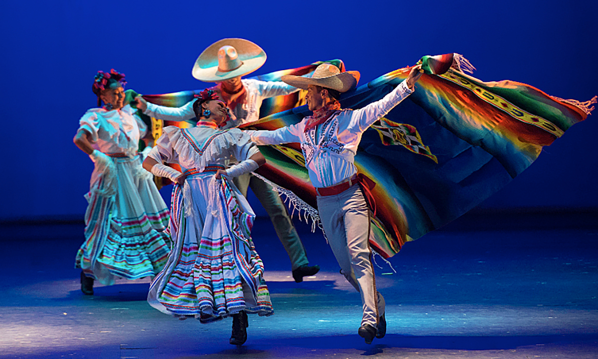

En México, la formación en danza folklórica va desde talleres recreativos hasta licenciaturas profesionales de alto rendimiento. Las instituciones más reconocidas se concentran principalmente en la Ciudad de México, aunque existen facultades de artes de gran prestigio en los estados.

Instituciones de Formación Profesional (Nivel Licenciatura)
-
Escuela Nacional de Danza Folklórica (ENDF) - INBAL:
Ubicada en la CDMX (Centro Cultural del Bosque). Es la institución máxima en formación de docentes y bailarines con un enfoque académico y etnodancístico.
-
Academia de la Danza Mexicana (ADM) - INBAL: También en CDMX, ofrece una formación integral y es de las más antiguas y respetadas.
-
Escuela de Danza de la Ciudad de México: Dependiente de la Secretaría de Cultura local, ofrece la especialidad en Danza Tradicional Mexicana en el Centro Cultural Ollin Yoliztli.
-
Escuela Superior de Danza Folklórica Mexicana "C'Acatl" (Puebla):
Una de las instituciones privadas con mayor prestigio académico y técnico en el centro del país.
Compañías con Escuela Propia
Estas escuelas están vinculadas a grandes ballets profesionales, por lo que el enfoque es muy escénico y estilizado:
-
Escuela del Ballet Folklórico de México de Amalia Hernández: Es quizás la más famosa a nivel mundial. Ofrece la carrera de Bailarín Profesional, además de cursos de verano y talleres para principiantes y niños.
Se ubica en el centro de la CDMX.
-
Talleres del Ballet Folklórico de la UNAM: Ideales para estudiantes universitarios y público general que busca un nivel técnico alto sin necesariamente cursar una licenciatura.
Universidades Estatales (Fuera de CDMX)
Muchos estados tienen facultades de artes con programas de danza folklórica de primer nivel:
-
Universidad Veracruzana (UV): Veracruz es cuna de grandes zapateadores, y su facultad de danza es referente nacional.
-
Universidad de Colima (UCOL): Hogar del famoso Ballet Folklórico de la Universidad de Colima; su formación técnica es rigurosa y reconocida.
-
Benemérita Universidad Autónoma de Puebla (BUAP): Cuenta con licenciaturas sólidas y un conjunto folklórico muy activo.
-
Escuela Superior de Música y Danza de Monterrey (ESMDM): Institución de excelencia en el norte del país bajo el sello del INBAL.
Centros de Educación Artística (CEDART)
Si estás en edad de secundaria o preparatoria, el INBAL tiene los CEDART en varios estados (como Querétaro, Chihuahua o Yucatán), donde puedes cursar el bachillerato con una especialidad en danza.